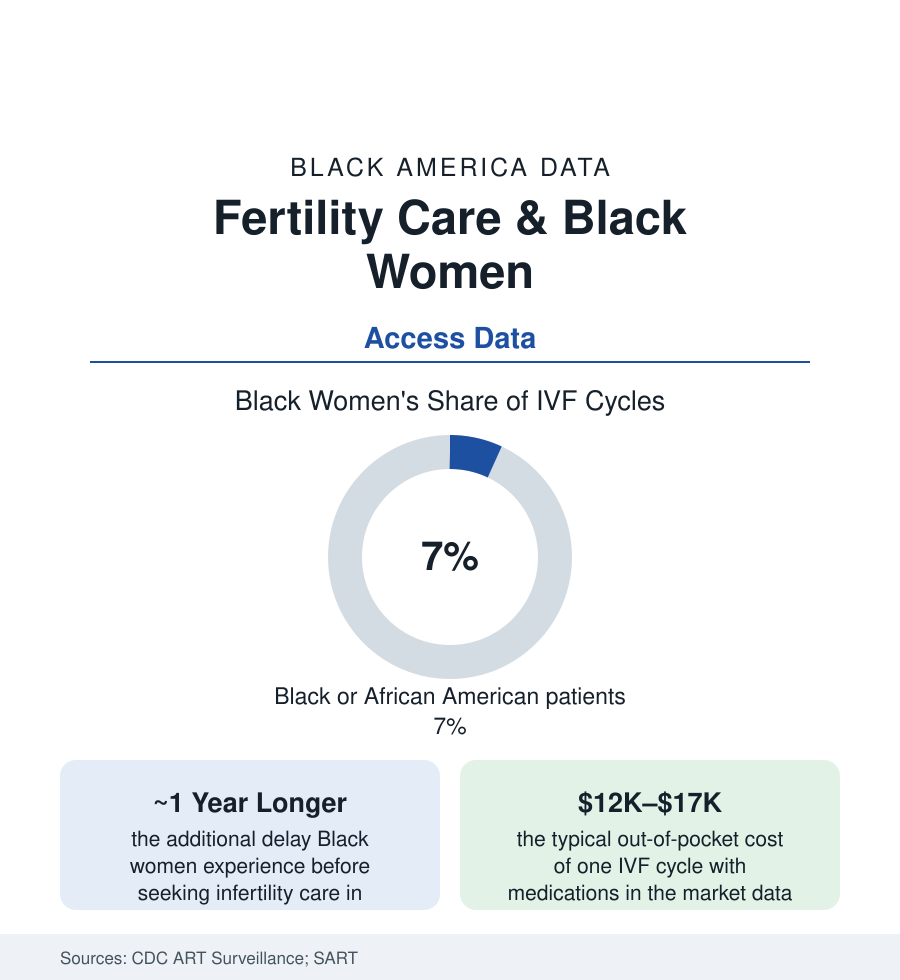

Black Public Health
Fertility and IVF: The Family-Building Medicine Black Women Reach Last
Black women experience infertility at equal or higher rates, wait roughly a year longer to seek care, and use IVF at a fraction of the rate. The SART and CDC data.

Infertility touches Black women at rates equal to or above the national pattern in the federal family-growth surveys — the fibroids, endometriosis, and tubal disease of this section's pages see to that — while the medicine built to treat it reaches them last and least: Black women constitute roughly seven percent of the nation's IVF cycles in the CDC's clinic surveillance, wait about a year longer than white women before first seeking care in the comparative studies, and post lower live-birth rates per cycle when they arrive. The gap is not a mystery in the data. It is an itinerary — referral, insurance, geography, price — walked a year late. This article reads the fertility file.
The Burden and the Delay
The National Survey of Family Growth's infertility measures (impaired fecundity running at comparable-to-higher rates among Black women, with the married-couple infertility data historically showing Black wives' rates the highest of any group) meet the causes this section has already priced: uterine fibroids (earlier, larger, more numerous), endometriosis diagnosed a decade late, tubal damage from the infections of the sexual-health file, and the male-factor half of the equation (the infertility work-up's male side — under-studied in Black men specifically, the semen-analysis and urology-referral data thin to the point of absence, a gap the literature names). The delay enters at the first gate: the primary-care and gynecology visits where 'keep trying' extends longest for Black patients in the referral-timing studies; the specialist geography (fertility clinics concentrating in affluent suburbs — the map of the SART clinic list against the map of the need) — and the cultural file the qualitative literature records carefully: infertility's stigma inside a community whose stereotype is hyperfertility (the controlling image the patients themselves cite as silencing), the faith framings, and the support deserts (the infertility support organizations' demographics historically as white as the clinics').
The Price Gate and the Insurance Map
Assisted reproduction in America is substantially a cash market, and the fertility file is the access file at its rawest: a single IVF cycle at $12,000–$17,000 with medications in the market surveys, multiple cycles the statistical norm — against the income and wealth data of the census section, an arithmetic that rations by balance sheet before any medicine is practiced. The coverage map is a state lottery: the infertility insurance mandates (on the books in about twenty states in varying strength, a few covering IVF generously, most with carve-outs) exclude the self-insured employer plans that cover most workers; Medicaid covers essentially none of it — dividing the patient population by employment sector as cleanly as by income. The utilization data price the result exactly: Black and lower-income patients' share of cycles running at a fraction of their share of infertility, the military health system standing as the accidental control group — its studies (treatment inside an equal-access system) showing utilization gaps narrowing sharply when the price gate is removed, the demand proven present wherever the wallet stops deciding.
Outcomes: The Cycle Data's Second Gap
Arrival does not equalize the outcomes: the SART/CDC cycle-level analyses record Black patients' live-birth rates per cycle running several points below white patients', with higher miscarriage rates in the adjusted models — the etiology debated in the literature across the fibroid burden (uterine environment), the age-at-arrival tax (the year of delay compounding in ovarian time), comorbidity load, and clinic-level factors (outcomes varying by the clinics Black patients disproportionately attend — the resourced-center gradient of the hospital file in miniature). The donor and surrogacy tiers (egg donation costs, gestational carrier costs in the high five to six figures) sit beyond the IVF gate's far side, their demographics thinner still in the agency data. The research representation repeats the pattern (Black participants sparse in the reproductive-medicine trials; the fibroid and endometriosis science of the earlier articles underbuilt for the population carrying the most disease) — while the corrective institutions grow in the record: the Black-led fertility advocacy organizations (the support networks and grant funds founded explicitly against the silence — cycle grants to Black patients a measurable micro-intervention), the employer-benefit wave (fertility benefits spreading through the large-employer market in the benefits surveys — a coverage expansion reaching the professional tier first, as benefits do), and the mandate legislation's state-by-state advance.
Reading the Fertility Data
Equal burden, a year's delay, a seventh of the cycles, worse odds on arrival: the fertility file is the health section's quietest data and among its most personal — the family itself, the grandparents article's next generation, rationed by referral and price. The control group exists and it is the military's: remove the gate, and the utilization gap closes. Nothing in the medicine was different. Only the door was.
More in Black Public Health
Hypertension Among Black Adults: Prevalence, Control, and Consequences
About 55 percent of Black adults have hypertension — the highest rate of any U.S. group. Prevalence, onset, control, and the stroke, heart, and kidney consequences in the data.
Diabetes Among Black Adults: Prevalence and Complications
Nearly one in five Black adults has diabetes, diagnosed or undiagnosed — and its complications fall with particular weight. The CDC data on prevalence, control, and outcomes.
Black Life Expectancy: The Gap at Birth and Its Causes
Black life expectancy at birth is about 73 years, roughly five years below the national figure — the summary measure of every health gap in this section. The CDC data.
Source: Centers for Disease Control and Prevention ART Surveillance; Society for Assisted Reproductive Technology; National Survey of Family Growth; American Society for Reproductive Medicine.